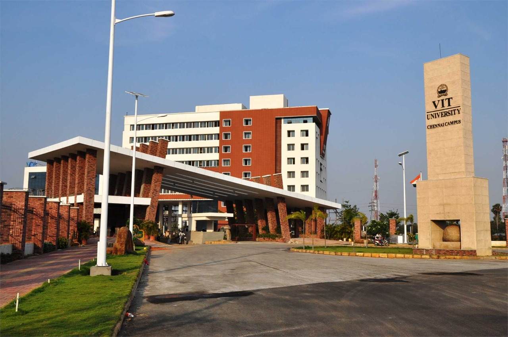
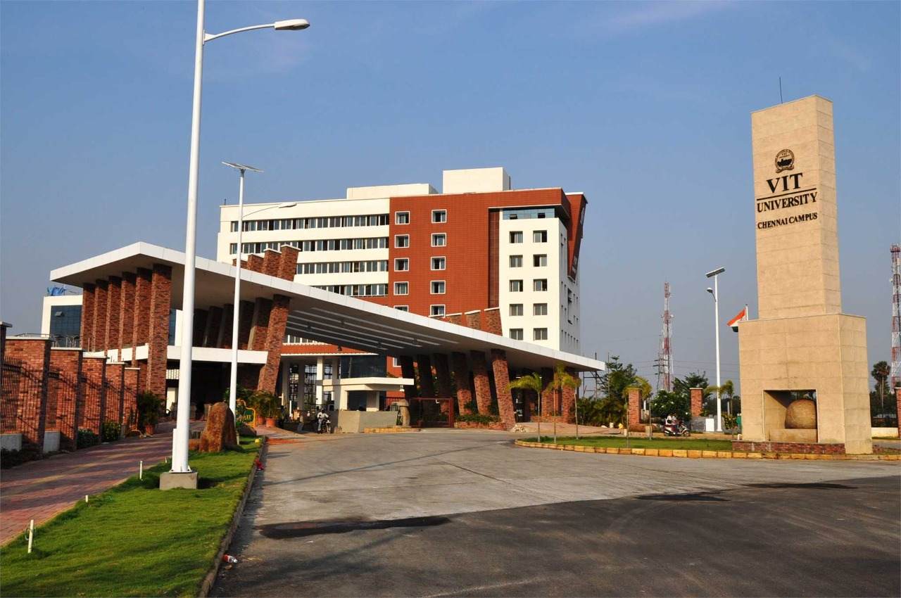

VIT, for the past 35 years, has made a mark in the field of higher education in India imparting quality education in a multi-cultural ambience, intertwined with extensive application-oriented research. VIT was established with the aim to provide quality higher education on par with International Standards. It persistently seeks and adopts innovative methods to improve the quality of higher education on a consistent basis. Established by well-known educationalist and former parliamentarian, Dr. G. Viswanathan, Founder and Chancellor, a visionary who transformed VIT into a center of excellence in higher technical education.
VIT Chennai is ably spearheaded by
Dr. Sekar Viswanathan, Vice President
Dr. Anand A. Samuel, Vice Chancellor
Dr. V. S. Kanchana Bhaaskaran ,Pro Vice Chancellor
They share in the mission to make VIT a global center.
 



The focus is :
-
To maximize the Industrial connectivity
-
To create Centers of Excellence in contemporary areas of research
-
To enrich Technological and Managerial Human Capital nurtured in a multicultural ambience
-
To provide a common platform for the agglomeration of ideas of personnel from various walks of life for learning enrichment
-
To create opportunities and exploit the available resources to benefit industry/society
-
To encourage participation in the National Agenda of knowledge building to foster International collaborations for mutual benefits in areas of research.
VIT Chennai has the following schools:
School of Advance Sciences (SAS):
The School offers M.Phil and Ph. D programs in Chemistry, Physics, Mathematics, English, French, German, Japanese and Chinese.
School of Electrical Engineering (SELECT):
The School offers B.Tech, M.Tech, M.Tech by Research and Ph.D programs in Electrical and Electronics streams with various specializations.
School of Electronics Engineering (SENSE):
The School offers B.Tech, M.Tech, M.Tech by Research and Ph.D programs in Electronics and Communication streams with various specializations.
School of Mechanical and Building Sciences (SMBS):
The School offers B.Tech, M.Tech, M.Tech by Research and Ph.D programs in Civil and Mechanical streams with various specializations.
School of Computing Science and Engineering (SCSE):
The School offers B.Tech, M.Tech programs, M.Tech by Research and Ph.D programs in Computer Science and Engineering with various specializations.
VIT Business School (VITBS):
The School offers B.Tech, M.Tech, M.Tech by Research and Ph.D in Management.
VIT Law School (VITSOL):
The school offers Bachelors degree in B.A.LLB (Hons), both integrated and double degree programs.
VIT Fashion Institute of Technology (VFIT):
The school offers fashion technology program.